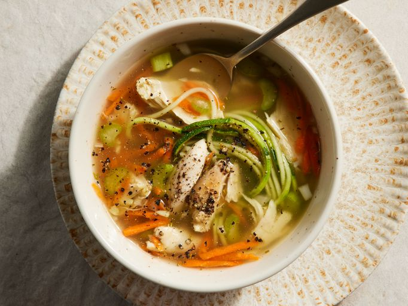

Home
Chicken Noodle Soup

Photo by All Recipes Magazine
This is Chicken Noodle Soup Recipe
A nice and cosy dish for the winter.
Ingredients:
- 2 tablespoons of olive oil
- 1 cup of diced onions
- 1 cup of diced celery
- 3 minced, garlic cloves
- 14.5 ounce of low-sodium chicken broth
- 1 cup of sliced carrots
- 3/4 pound of cooked chicken breast, cut into bite size
- 1/2 teaspoon of dried basil
- 1/2 teaspoon of dried oregano
- 1 pinch of dried thyme (optional)
- Salt and group black pepper to taste
- 3 zucchini squash, cut into 'noodles'
Instructions:
- Heat olive oil in a large pot over medium-high heat. Saute onion, celery, and garlic in hot oil until just tender, about 5 minutes.
- Pour chicken broth into the pot; add carrots, chicken, basil, oregano, thyme, salt, and pepper. Bring the broth to a boil, reduce heat to medium-low, and simmer mixture until the vegetables are tender, about 20 minutes.
- Divide zucchini 'noodles' between six soup bowls; ladle broth mixture over the 'noodles.'
And thats all!